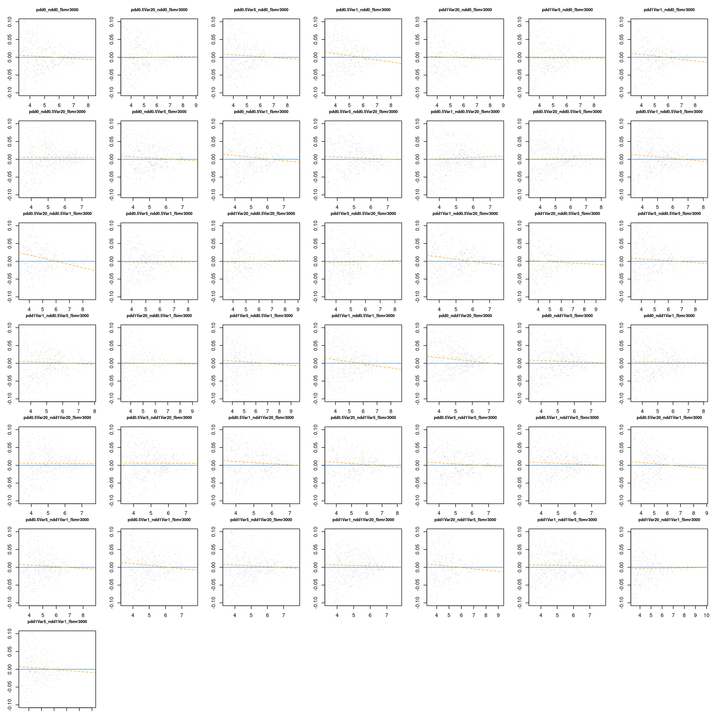
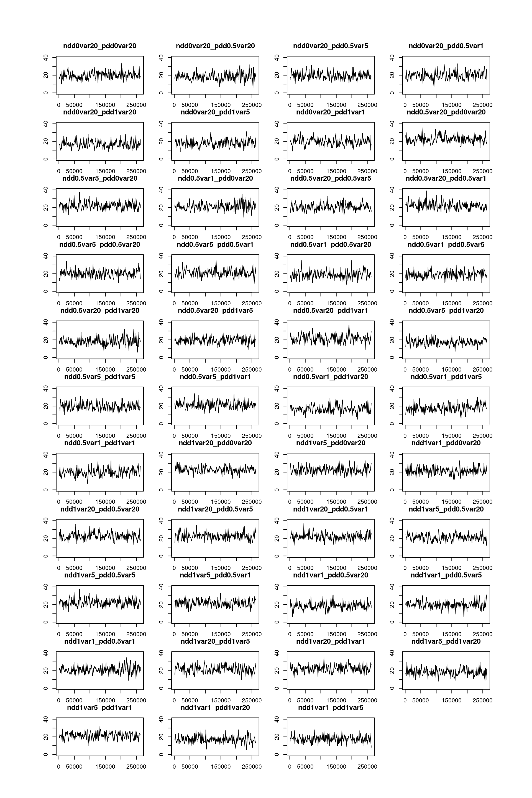

library(PhyloSim)
library(parallel)
library(dplyr)
library(tidyverse)
# root <- "~/Uni/Master/MA/" # work from local machine
root <- "~/cyber_synch/" # work from uni bayreuth serverPhyloSim Changes
0.1 Mortality change through all individuals: fbmr = 3000
This script is a copy of “expKrnl&McCoef” with the only difference that fbmr is 3000 instead of 10. Because, I want to see what effect fbmr has on the whole analysis.
0.1.1 Data preparation
Fitness base mortality ratio = 3000.
the fitness base mortality ratio (fbmr) skips fitness dependent death every fbmr’th step. E.g., fbmr = 10 would cause always death, independent of fitness. In this batch, it is set to 10. In the next, to 3000. We’ll see if fbmr changes the mortChange coefficient dramatically. But, first things first.
# load in runs with exp kernel
runs_ii <- readRDS(paste0(root, "/local/runs/mstr/20250807/runs_ii.rds"))Next, we
- calculate the numbers of conspecific neighbors
- asess if an individuls dies in the consequent generation. Therefore, we ran the simulations with sort(c(seq(x,y), seq(x,y)+1)). Again, we assess death after each period in time trough the immediately next generation (e.g, focal generation 1000 -> individuals dead at 1001 ?)
# get conspecific neighbors and proper naming
runs_ii <- getConNeigh(runs_ii)Next, we convert the matrix data into tabular data. With the argument detailedParams we include the parameter settings a seperate cols. We save the tabular data.
# convert matrices to tabular data. This is done parallel, as it takes longer
cl <- makeCluster(length(runs_ii))
clusterExport(cl, c("getMatToTab", "runs_ii"))
tab_i <- parLapply(cl = cl, X = runs_ii, fun = function(x) getMatToTab(x, detailedParams = TRUE))
saveRDS(tab_i, paste0(root, "local/runs/mstr/20250807/tab_ii.rds"))We only keep important parameters in the naming
tab_ii <- readRDS(paste0(root, "local/runs/mstr/20250807/tab_ii.rds"))namesShort <- names(tab_ii) %>%
stringr::str_remove("_disp.+") %>%
stringr::str_remove("Cut1") %>%
stringr::str_remove("Cut1") %>%
paste0("_fbmr3000")Now, we delete every second generation. Remember, we had to calculate the death in the consequent generation. After doing so, the generation x + 1 is no longer needed and is discarded.
# keep only first timespot in census
tab_iix <- lapply(tab_ii, function(x){
res <- x %>%
filter(census %% 2 == 0,
census > 175000) # focus only on last censii
return(res)
})
names(tab_iix) <- namesShort0.1.2 Statistical analysis
We use a binomial glm and calculate the change in mortality for (one conspecific neighbor) - (no conspecific neighbors). As also described in @ref(sec-mortality-change). To calculate uncertainties, we use a non-parametric boot strap approach, because we want to aknowledge error propagation of each term.
boot_mort_change <- function(x, B = 1000) {
boot_vals <- numeric(B)
for (i in seq_len(B)) {
xb <- x[sample(nrow(x), replace = TRUE), ]
fm <- tryCatch(glm(mortNextGen ~ con, family = binomial(), data = xb),
error = function(e) return(NA))
if (is.na(fm)[1]) {
boot_vals[i] <- NA
} else {
est <- coef(fm)
mort0 <- plogis(est["(Intercept)"])
mort1 <- plogis(est["(Intercept)"] + est["con"])
boot_vals[i] <- mort1 - mort0
}
}
ci <- quantile(boot_vals, c(0.025, 0.975), na.rm = TRUE) # allows error propagation
point <- mean(boot_vals, na.rm = TRUE)
return(c(mort_change = point, ci_lower = ci[1], ci_upper = ci[2]))
}cl <- makeCluster(length(tab_iix))
clusterExport(cl, c("boot_mort_change", "tab_iix"))
boot_results_ii <- parLapply(cl = cl, X = tab_iix, fun = function(x) boot_mort_change(x, B = 500))boot_results_iix <- do.call(cbind, boot_results) %>% as.data.frame()
saveRDS(boot_results_iix, "~/cyber_synch/local/summary/boot_results_xii.rds")boot_results_iix <- readRDS(paste0(root, "local/summary/boot_results_xii.rds"))0.1.3 Visualization
par(mar = c(16,4,1,1))
x <- 1:ncol(boot_results_iix)
y <- as.numeric(boot_results_iix["mort_change",])
ci_lower <- as.numeric(boot_results_iix["ci_lower",])
ci_upper <- as.numeric(boot_results_iix["ci_upper",])
plot(y = y, x = x, ylab = "mortChange", xlab = "", xaxt = "n", ylim = range(ci_lower, ci_upper))
axis(1, at = x, labels = namesShort, las = 2)
arrows(x0 = x, y0 = ci_lower,
x1 = x, y1 = ci_upper,
angle = 90, code = 3, length = 0.05)Next, we show the effect of the density strength and variance on the mortality change
mort_long <- boot_results_iix %>%
tibble::rownames_to_column("metric") %>%
pivot_longer(cols = -metric, names_to = "param_combo", values_to = "value") %>%
pivot_wider(names_from = metric, values_from = value)
meta_df <- lapply(tab_iix, function(x) {
data.frame(
nDD = x$nDD[1],
pDD = x$pDD[1],
nDDVar = x$nDDVar[1],
pDDVar = x$pDDVar[1]
)
}) %>% bind_rows()
mort_long <- bind_cols(mort_long, meta_df)
# Plot 1: change in mortality vs NDD/PDD strength
ggplot(mort_long, aes(x = factor(nDD), y = factor(pDD), fill = mort_change)) +
geom_point(shape = 21, size = 3, position = position_jitter(width = 0.3, height = 0.3)) +
scale_fill_viridis_c(name = "change in\nmortality") +
theme_minimal() +
labs(x = "NDD Strength", y = "PDD Strength")# Plot 2: change in mortality vs NDD/PDD variance
ggplot(mort_long, aes(x = factor(nDDVar), y = factor(pDDVar), fill = mort_change)) +
geom_point(shape = 21, size = 3, position = position_jitter(width = 0.3, height = 0.3)) +
scale_fill_viridis_c(name = "change in\nmortality") +
theme_minimal() +
labs(x = "NDD Variance", y = "PDD Variance")0.2 Mortality change species-wise: correaltion between species abundance and change in mortality
Literature often finds a correlation between stabilizing strength and the abundance of a species. To test this, we redo the analysis but now species-wise and add abundance and “NperCen”, a correct abundance measure, to the data.
0.2.1 Data preparation
Additionally, besides using abundance as metric for the correaltion(abund. , stabilization), we correct for the number of generations, where a species is present. E.g, if specId 1 survives long enough, it will be present in 3 generation \(x_{n}, x_{n+1}, x_{n+2}\). This creates a bias. We correct by dividing the total abundance (throughout the whole time series) by number of generations, the species is present (E.g., \(\frac{5041}{3}\)). This new metric is called NbyCen. Finally, we join all information together.
Also, we filter out very rare species, to increase statistical power.
# calculate number of censii in which species occur
NbyCen <- lapply(tab_iix, function(x){
res <- x %>%
group_by(specId) %>%
summarise(n_census = n_distinct(census))
return(res)
})
# add abundances and (abundances / number of censii in which they occur)
tab_iixx <- lapply(seq_along(tab_iix), function(i){
res <- tab_iix[[i]] %>%
group_by(specId) %>%
mutate(abund = n()) %>%
left_join(NbyCen[[i]], by = "specId") %>%
mutate(NperCen = abund / n_census) %>%
ungroup()
return(res)
})
tab_iiS <- lapply(tab_iixx, function(x){
res <- x %>%
filter(abund > 30)
return(res)
})0.2.2 Statistical Analysis
cl <- makeCluster(length(tab_iiS))
mort_changeS <- parLapply(cl, tab_iiS, function(x) {
i <- 1 # index
len <- length(unique(x$specId))
res <- data.frame(specId = rep(NA, len),
abund = rep(NA, len),
NperCen = rep(NA, len),
mort_change = rep(NA, len))
for (sID in unique(x$specId)) {
fm <- glm(formula = "mortNextGen ~ con",
family = binomial(),
data = x[which(x$specId == sID), ])
sfm <- summary(fm)$coefficients
mort0 <- plogis(sfm["(Intercept)", "Estimate"])
mort1 <- plogis(sfm["con", "Estimate"] * 1 + sfm["(Intercept)", "Estimate"])
res$mort_change[i] <- (mort1 - mort0)
res$abund[i] <- x$abund[which(x$specId == sID)][1]
res$NperCen[i] <- x$NperCen[which(x$specId == sID)][1]
res$specId[i] <- sID
i <- i + 1
}
return(res)
})
# Stop the cluster
stopCluster(cl)# add regressionline mc ~ abund
mort_changeS <- lapply(mort_changeS, function(x){
fm <- lm(mort_change ~ log(abund), data = x)
x$int = fm$coefficients[1]
x$slope = fm$coefficients[2]
return(x)
})
mort_changeSx <- lapply(mort_changeS, function(x){
fm <- lm(mort_change ~ log(NperCen), data = x)
x$int = fm$coefficients[1]
x$slope = fm$coefficients[2]
return(x)
})0.2.3 Visualization
names <- names(tab_iix) %>% stringr::str_remove("_fbmr10")
par(mfrow = c(7,7), mar = c(1,3,3,1))
invisible(sapply(seq_along(mort_changeS), function(i){
x <- mort_changeS[[i]]
plot(x = log(x$abund), y = x$mort_change,
ylim = c(-0.1, 0.1), xlab = "abund", ylab = "mortality\nchange",
cex = .3, col = rgb(0,0,0,.05),
main = names[i], cex.main = .8)
abline(h = 0, col = "steelblue")
abline(x$int[1], x$slope[1], lty = 2, col = "orange")
}))
names <- names(tab_iix) %>% stringr::str_remove("_fbmr10")
par(mfrow = c(7,7), mar = c(1,3,3,1))
invisible(sapply(seq_along(mort_changeSx), function(i){
x <- mort_changeSx[[i]]
plot(x = log(x$NperCen), y = x$mort_change,
ylim = c(-0.1, 0.1), xlab = "abund", ylab = "mortality\nchange",
cex = .3, col = rgb(0,0,0,.05),
main = names[i], cex.main = .8)
abline(h = 0, col = "steelblue")
abline(x$int[1], x$slope[1], lty = 2, col = "orange")
}))1 Analyzing Species richness as a measure of coexistence
Scientific consensus is that stabilization increases Coexistence. Coexistence can be described by the number of species that coexist within a community.
# if not loaded, load raw runs
runs_i <- readRDS(paste0(root, "/local/runs/mstr/20250807/runs_ii.rds"))par(mfrow = c(11,4), mar = c(1,3,3,1), oma = c(5,5,5,5))
S <- getSpecTime(runs_i, ymax = 40, title = names(runs_i))
meanS <- sapply(S, function(x) mean(x$spec_rich))
par(mar = c(15,6,1,3))
plot(meanS, xaxt = "n", xlab = "", ylab = "species richness")
axis(1, at = x, labels = names(runs_i), las = 2)
segments(x0 = x, y0 = 0, x1 = x, y1 = meanS, lty = 2)